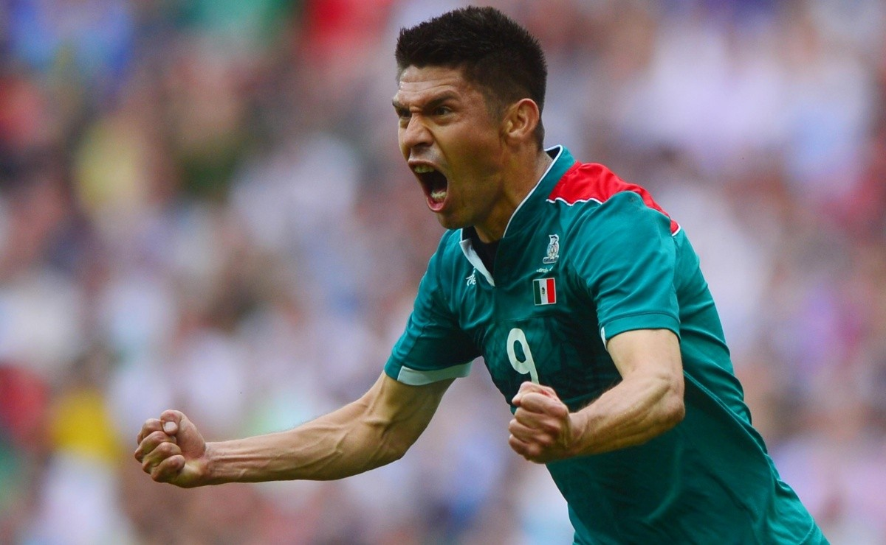

Geovani Jael Torres Mata
[Inserte texto de ejemplo]
El 11 de agosto de 2012 se convertiría en uno de los días más importantes en la historia del fútbol mexicano. El rival no pudo ser más duro, se trataba de la poderosa selección de Brasil que contaba con una auténtica plantilla de miedo. A eso habría que sumarle la lesión de Giovanni Dos Santos que salió con molestiasen el partido
contra Japón. Sin duda, una de las bajas más sensibles para cumplir el sueño. Esto llegó a oídos del rival que incluso agradeció su ausencia. La selección azteca
ponía el balón en juego en el histórico Wembley, y sin siquiera cumplirse el primer minuto, vendría una jugada inolvidable. La presión desde arriba hecha entre
Aquino, Fabián y Peralta transformarían hasta ese momento el gol más rápido de los Juegos Olímpicos. Esto encendería el ánimo de los brasileños, que responderían
con llegadas peligrosas. Salcido trataría de sorprender con un potente disparo. Hulk ponía a prueba los reflejos de Corona desde larga distancia.
Marcelo, el lateral del Real Madrid, se enterraba en el área y ponía un aviso más a la selección mexicana. Neymar continuaba con la intensa presión brasileña.
Terminaría el primer tiempo y esto le daría el respiro necesario a la selección mexicana para poder replantear su juego. Iniciada la parte complementaria,
la verde-amarela continuaba con la ofensiva. En un error defensivo le caía el balón a Marco Fabián. Otro centro y, de nuevo, Fabián pierde la oportunidad de
ampliar la ventaja. Brasil disparaba desesperado buscando el milagro. Llegó el minuto 74 y decidieron ejecutar una jugada de pizarrón.
Se jalan las marcas, especialmente Enríquez, quien era el jugador más alto del combinado mexicano. Le abre espacio a la llegada de Oribe,
quien remata con determinación al arco consumando el segundo gol. A pesar de tener el partido donde México lo quería, un contragolpe brasileño en el
minuto 90 descontó un gol. Nadie quería pensarlo, pero los fantasmas aparecían, y fue aquel centro de Hulk que remató Oscar lo que congeló por instantes a los aficionados mexicanos.
Esta sería la última jugada que pondría punto final a todo un trabajo que se materializaría con la victoria. Se mostró al mundo que la fórmula para trascender no es la suerte, ni son las grandes figuras, ni el talento individual, sino la unión y la motivación de cumplir un sueño. Ese día, el himno nacional mexicano retumbó en Wembley. Cada nota hizo retumbar a Londres como el rugir de un cañón.
Por fin, las palabras se volvieron hechos, el trabajo se convirtió en gloria y los sueños se transformaron en oro.
